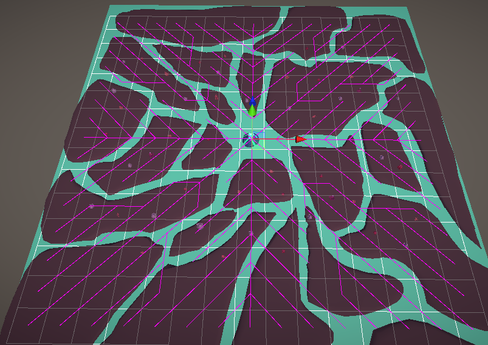
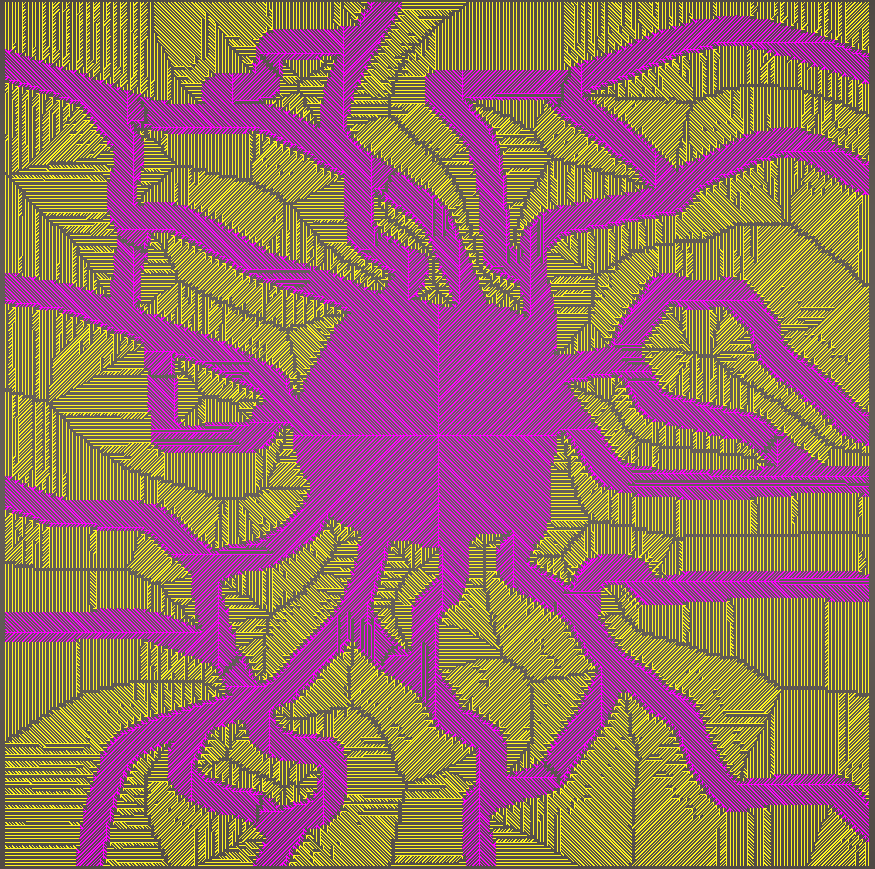
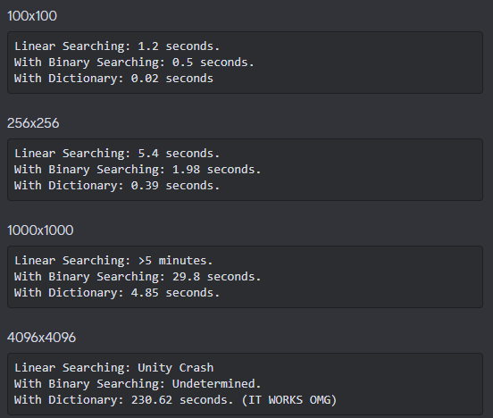
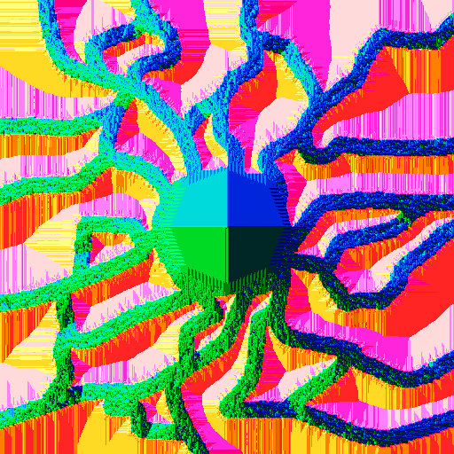
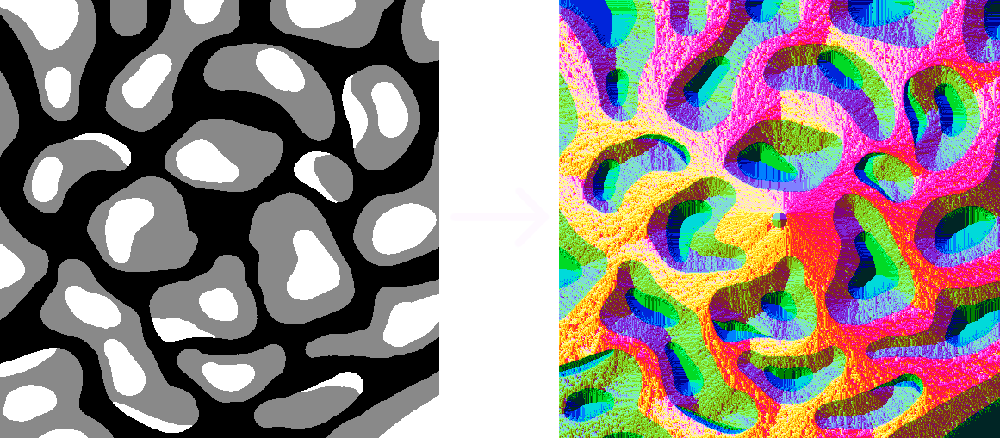

Shroom Defenders is a tower defence game made by second year students as a part of AIE's advanced diploma course. I was the tools programmer on this team.
The project needs something to direct enemies along paths and towards the centre of the level. Enemies should be able to move fluidly and not in purely straight lines. Enemies wandering off the path briefly is okay, and expected when they swarm, but they should attempt to get back onto the path quickly. The project also requires a way of determining where towers (shrooms) can be placed, which should be opposite to the areas enemies can traverse.
23rd August 2023
The solution to the requirements I came up with was to have a grid of values that represents the level. This will store whether a tile is Walkable or Placable so the interaction manager can check where it can and can't place towers. This will also be vital later when storing the direction enemies should be instructed to go.
A very helpful thing I got working early on was a visualisation of the levels flow lines. This allowed me to quickly check that values were being set correctly. Currently they all just tend to the centre so thats where the next step comes in.
24th August 2023
Due to the need to have all the tiles filter into the centre of the map it seemed like a natural fit to use a flood fill to populate the flow data. To achieve this I used dijkstra's algorithm with the only end condition being when all tiles are filled. This also allows for pathfinding calculations to be front loaded and not become more expensive the more enemies we have.
After first using a given input texture to store in each tile whether it is placeable or walkable, the flood fill commences. Placeable tiles have a higher cost to enter than walkable tiles, causing them to quickly flow back out.
26th August 2023
I wanted the editor window to be as simple as possible for people to generate level data. After a fair bit of tweaking and removing exposed variables it felt as simple as it could be with having a texture input, a cost multiplier for the algorithm, and a generate button. All a designer would have to do was bring an image into Unity, allow read/write in the import settings, and drag it into my tool.
27th August 2023
The biggest slowdown times came when figuring out if a tile on the tile grid was pending or not. It was important that the finalised tile grid data was as small as possible to minimise memory requirements as the data filled out. However, that meant I needed a different data structure containing information for a tile that was being processed. The biggest issue with this was the fact that I didn't have an efficient way to find an equivalent tile, which meant I was linearly searching every tile being processed to find one that matched with a tile in the grid based on its coordinates. This got really bad really quickly when using larger textures.
The first optimisation strategy I employed was using binary searching to find where new tiles should be inserted into the pending list, to keep the list sorted. This reduced holdups by removing the need to linearly search through a potentially very large list. The biggest holdup now was when trying to find if a tile existed in the list based on its coordinates in the tile grid as that cannot be binary searched through. That was solved by using a dictionary where the key was a hash of its coordinates on the tile grid. With both of these solutions the generation of data was far more efficient, as represented in the image above.
28th August 2023
The biggest thing that caused issues for me was the large amount of data involved. A lot of optimisations were good but it was clear this could not be ran at runtime. This meant I needed to come up with a way to store the generated data so it could be read at runtime.
Textures and my level data have a few things in common. But the one I care about is that they're both a 2d array of values, and reading textures at runtime is something computers are very good at doing well. I decided to have the red channel determine the tile type (walkable or placeable), while the green/blue channels determine the x/y components of the flow direction. The flow direction components had to be remapped so that -1 to 1 became 0 to 1. And the walkable vs placeable was just set to 0 or 1.
2nd September 2023
The enemies in the game project use the boids flocking algorithm to move and swarm together. The enemies get flow information by querying the stored level data for which tile they are on, and then add the returned direction to its flocking influences.
24th October 2023
Many discussions were had in relation to the state of the game at this point in the project, and artists were having a difficult time fitting art to the restrictive design of binary levels (placeable vs walkable). The idea was proposed that there should be a third option that is both unplacable and unwalkable.
The way I solved this was by additionally writing some areas into the input texture as an 'obstacle' value. And artists, who were also designing levels, wanted the order of values switched. So now when the input texture is read it handles 0-1 colour values less than 0.33 as obstacles, values of 0.33-0.67 as placable, and values greater than 0.67 as walkable.
I am really proud of the work I did on this tool. It was really fun to work on and it was so satisfying having it all come together and then get to see it working with the basic flocking AI I implemented. And it was so helpful when it came to making level layouts. It allowed for rapid iteration and adjustments without any difficulties. This is a project I would love to expand on at some point as I think it could have been improved further by having the option to randomly distribute environmental assets around the level based on the type of each tile. With that and tweaking from an environment artist I totally see this being a very useful tool for creating a bunch of different levels and variations!
This project was a really valuable learning experience for me. It was the biggest delve into one big programming task I've undertaken to this point and it required several optimisation techniques I'd previously only known about in theory. It was very rewarding getting to make something that was used so heavily by the team and I'm really glad I went through with it.